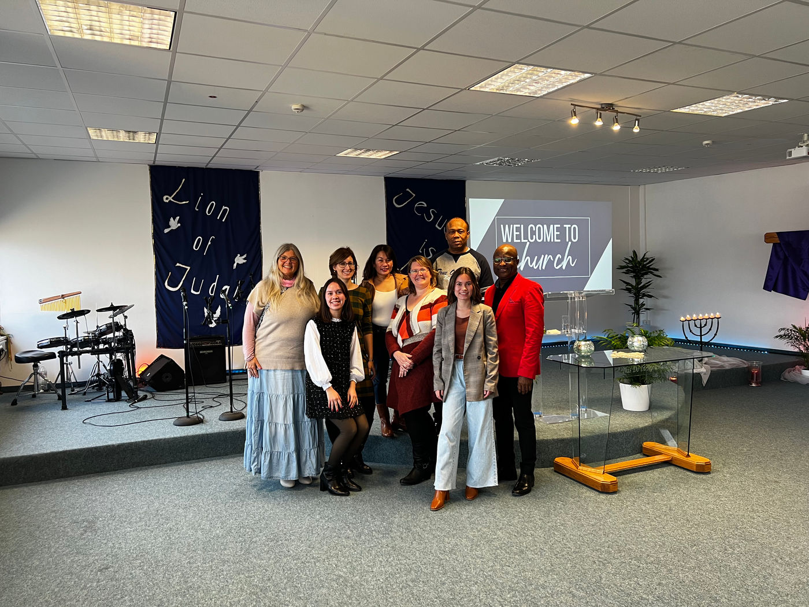
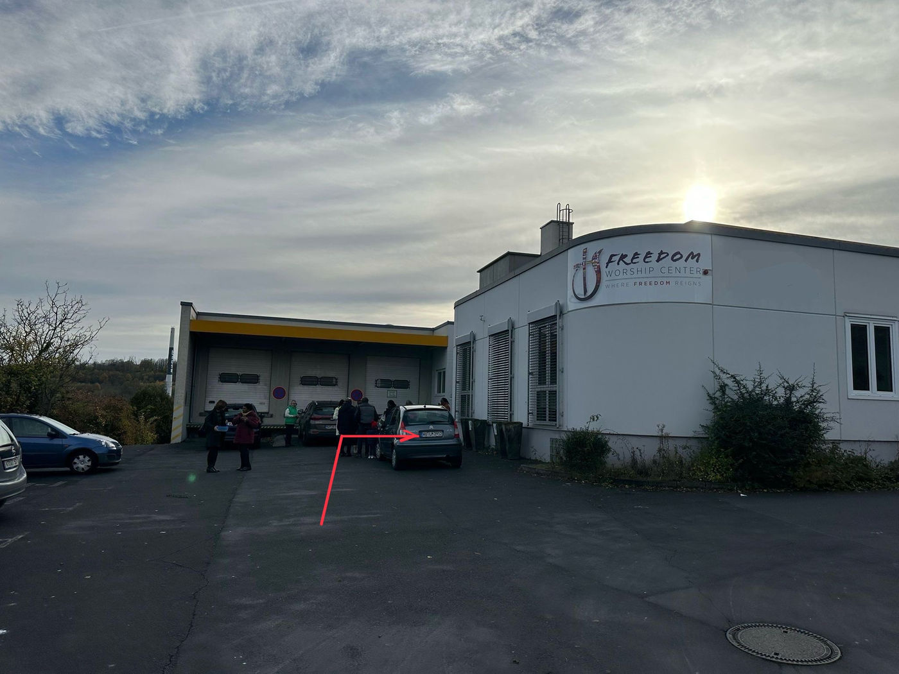
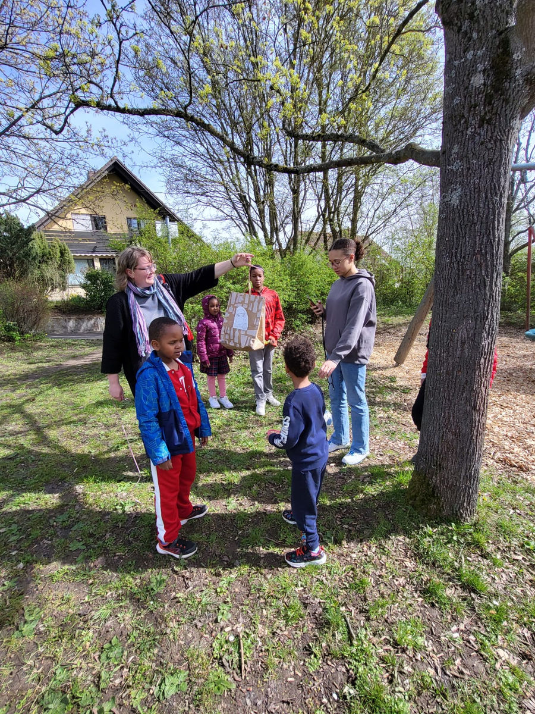
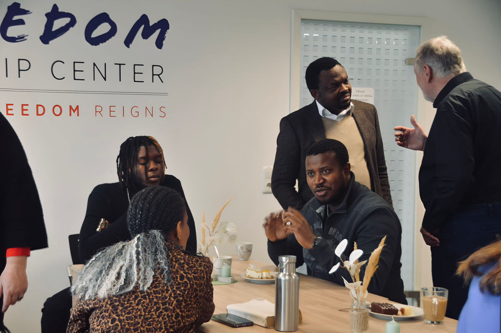

Wir können es kaum erwarten, dich willkommen zu heißen!
Hier findest du alles für deinen ersten Besuch. Komm einfach so, wie du bist.
Wann wir uns treffen.
Anfahrt & Infos.
-
Adresse
Route planen -
ParkenKostenloser Parkplatz direkt vor Ort.
-
SpracheGottesdienste auf Englisch und Deutsch – die Predigt wird übersetzt, die Liedtexte werden an die Leinwand projiziert.

Dein erster Sonntag.

Lobpreis
Unser Lobpreisteam mit Keyboard, Schlagzeug, Gitarre, Bass und Gesang – auf Englisch und Deutsch.

Wort & Gebet
Eine biblische Botschaft und Raum für Gebet und das Wirken des Heiligen Geistes.

Kinderkirche
Eigene Gruppen für Kinder von 5–8 und 9–12 Jahren in zwei Kinderräumen.

Kaffeezeit
Nach dem Gottesdienst sorgt unser Gastgeberteam für Kaffee und gute Gespräche.
Was soll ich anziehen?
Komm so, wie du dich wohlfühlst. Es gibt keinen Dresscode.
Ich spreche kaum Deutsch – ist das ein Problem?
Überhaupt nicht! Unsere Gottesdienste sind auf Englisch und Deutsch, und Menschen aus vielen Ländern sind bei uns zuhause.
Gibt es etwas für meine Kinder?
Ja! Jeden Sonntag gibt es Kinderkirche mit biblischen Lektionen und Aktivitäten. Am letzten Sonntag im Monat gibt es besondere Aktionen wie Filme, Basteln oder ein kleines Sportfest.
Muss ich Christ sein, um zu kommen?
Nein. Jeder ist willkommen – egal ob du glaubst, zweifelst oder einfach neugierig bist.
Kann ich auch online dabei sein?
Ja, der Gottesdienst wird auf YouTube übertragen. Jugendgebet und Bibelstudium finden unter der Woche per Zoom statt – schreib uns für den Link.